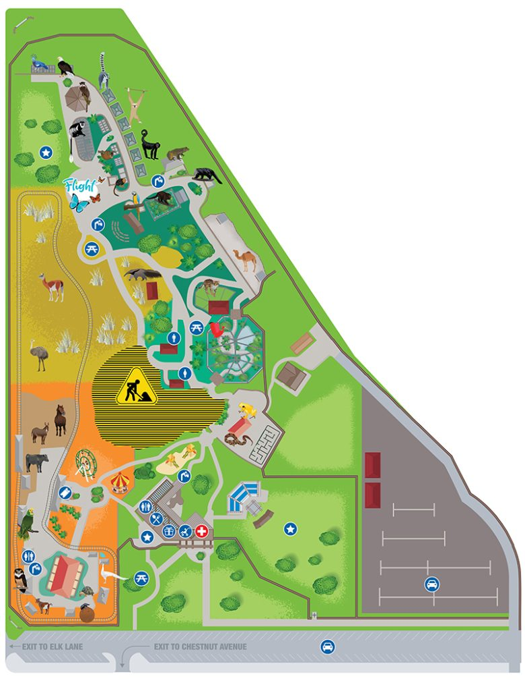

01 / DISCOVER
Meet the residents
Browse animal profiles, search by name or category, and find a new favorite before you arrive.
A guest guide for curious days
Meet the animals, get your bearings, and find the details that make a day at Santa Ana Zoo easier to plan.
Everything for a better zoo day
One simple place to get ready for your visit and discover what’s waiting around the next bend.
01 / DISCOVER
Browse animal profiles, search by name or category, and find a new favorite before you arrive.
02 / FIND YOUR WAY
Keep a clear, read-only zoo map handy, with a save option for offline reference.
03 / PLAN AHEAD
Check visit details, admission information, accessibility notes, food, and rides.
04 / MAKE A DAY OF IT
Browse events and family activities, then explore the zoo at your own pace.
Explore at your own pace
Find the reference map when you need it. Save a copy for offline viewing and keep your next stop in mind.

Easy as 1, 2, zoo
Search animals, events, and helpful visitor information.
Check the map and pick the stops your group is excited about.
Keep the guide close and follow official links when needed.
Your next favorite day is calling
The Santa Ana Zoo Guide is coming to iPhone and Android. Store links will appear here when the app is published.
No account needed. Official ticket purchases and services remain on the Santa Ana Zoo website.
Good to know
Here’s what to expect from the visitor guide.
This is a community partner visitor guide for planning a guest visit. Official zoo services and purchases remain on the Santa Ana Zoo website.
The guide does not process payments. It shares admission information and links you to official Santa Ana Zoo services for purchases.
The map is a static reference and can be saved for offline viewing. It does not use live location or provide routing.
No account is needed to browse the guide’s visitor information, animal profiles, events, and map.